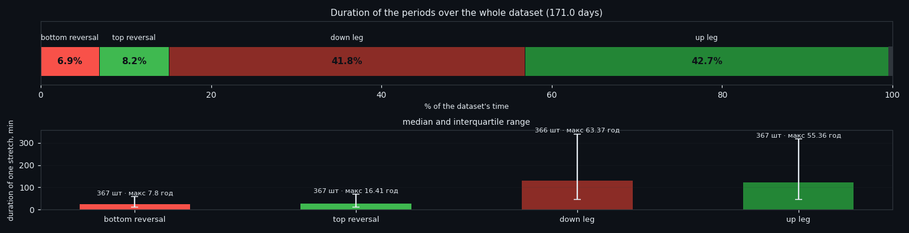
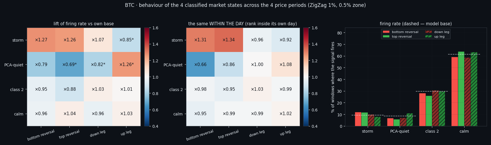
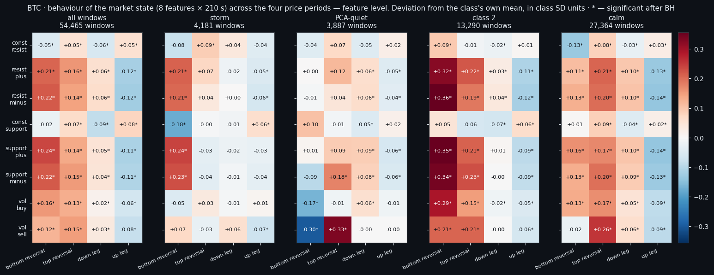
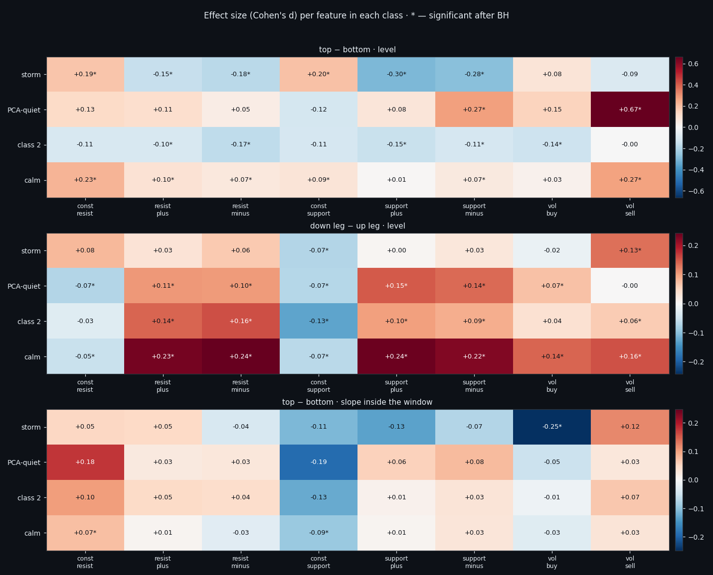
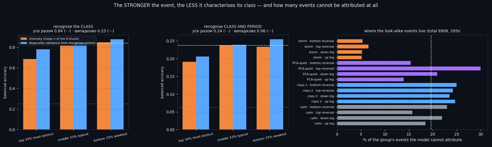
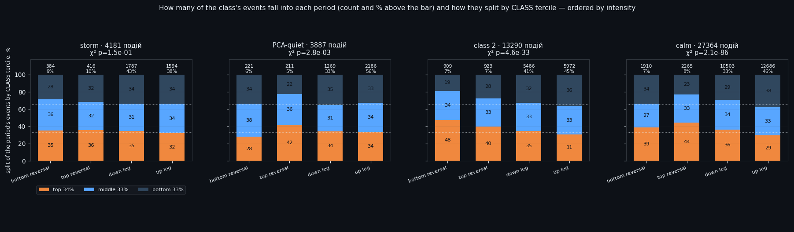
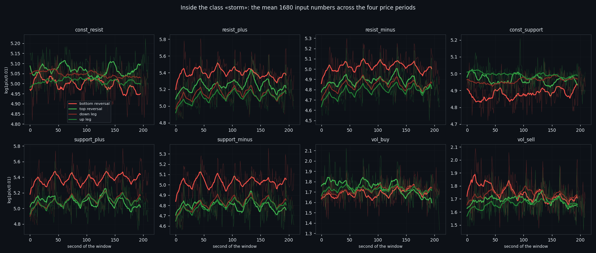

Does the Phase of a Move Change What the Order Book Looks Like?
In shortWe have four detectors of market state and a map of where price is in its move — reversal zones and the legs between them. Laying one over the other answers a question that sounds simple and is not: does the phase of a move change what a market state looks like? On 171 days of BTC the answer splits. The count of events barely moves — each class fires roughly in proportion to how long the phase lasts. What moves is their strength, and only for the quiet classes. And in one narrow place the order book finally beats price: telling a top from a bottom inside a storm.
Narrated walkthrough · plays from YouTube when you press play.
① Two markings of the same time
Everything here compares two labellings of the very same seconds.
The first is the market state: a window of 8 order-book features × 210 seconds, classified by four detectors trained in another study — storm, PCA-quiet, class 2 and calm. Answers are taken out-of-fold: every window is judged by a model that never saw it.
The second is the phase of the move, from our ZigZag study: a 1.0% ZigZag marks local extrema, and a zone is the stretch during which price stays inside a 0.5% band around the extremum. That gives exactly four phases: bottom reversal, top reversal, down leg, up leg. A window belongs to the phase its middle falls into.
The scale everything must be read against is time. Bottom reversals take 6.9% of the dataset (367 stretches, median 25 min), top reversals 8.2%, the down leg 41.8% and the up leg 42.7%. Reversal zones together are 15.0% of all time; the legs are 84.5%. A reversal lasts about half an hour, a leg about two.
One detail that costs a rerun if you miss it: the four classes are not mutually exclusive. They are four separate detectors, and out of 44,698 windows inside phases, 6,178 have two classes active at once and 391 have three.

② How often each state fires in each phase
The simplest question first: does a class fire more often in a reversal than in the body of a move? Each model is compared only against itself — their bases differ by an order of magnitude (9.3% of the time for storm, 61.4% for calm), so the table shows lift, not raw rates.
Two of the four react, and they react in opposite directions. Storm fires ×1.325 more often in a reversal zone than in the body of a leg; PCA-quiet ×0.7, i.e. less often. Class 2 (×0.895) and calm (×1.008) sit entirely inside the null control.
That null control matters more than the numbers. Phases are long and strongly autocorrelated, so any lift looks impressive until you shift the model's answers in time relative to the labelling — which destroys the link with the phase but keeps the autocorrelation of the answer itself. Over 999 such shifts the storm contrast lands at p=0.014 and PCA-quiet at p=0.01; everything else fails.
Direction is not readable at this level at all. Bottom reversal against top reversal is ×1.013 for storm against a null of ×1.041 — nothing, and the same for every other class. The only asymmetry lives in the legs: PCA-quiet fires ×0.65 down-versus-up (p=0.002), meaning rises are quieter than falls.

③ The features themselves, phase by phase
So far we compared what the models said. Now we compare what they saw: the 8 × 210 matrix in exactly the form it is fed in. Each cell is how far a feature's level in this phase deviates from the mean of its own class, in class SD units — that makes all eight features and all four classes comparable despite different units and very different bases.
The general picture is the same in every class: inside reversal zones all six flow features are lifted above their usual level (+0.24 for support_plus at a bottom), and in the up leg they are pushed down (-0.11). It holds inside each class separately, so it is not a composition effect.
And here is where direction hides. The top-versus-bottom difference is delivered not by storm but by PCA-quiet: vol_sell is +0.33 at a top reversal against -0.30 at a bottom — a spread of 0.63 d, the largest in the whole map. In storm that same place is nearly empty: there all eight features are already at their maximum, and the phase adds no information.
Shape works in exactly one class. Inside storm windows the slope of vol_buy is -0.19 at a top: buying fades across the 210 seconds. In the quiet classes the slopes are empty — in a still window there is nothing to tilt.

④ Inside each class: the 1680 numbers, and the honest benchmark
Per-class, per-second now. Each class answers differently, and that is the point:
- storm separates tops from bottoms only by its walls: const_support +0.20, const_resist +0.19, while the flows go negative (-0.30 for support_plus) — the book is busier at bottoms;
- class 2 has all six flows lower at tops (-0.17…-0.14);
- calm shows vol_sell +0.27 together with const_resist +0.23: in a quiet window at a top there is simultaneously a thicker sellers' wall and more selling;
- PCA-quiet pushes that same signature to vol_sell +0.67, the largest effect in the entire study, though on only 432 zone windows.
Now the number that matters most, and the benchmark that keeps us honest. On "top or bottom", five blocked folds inside each class: the order book scores 0.530 to 0.587, while price inside the very same window scores 0.419 for PCA-quiet, 0.459 for class 2, 0.484 for calm and 0.498 for storm — nothing at all, in all four. It is modest, but it is not a shadow of price, and it replicates across four independent subsamples. In an extremum price does not move for 210 seconds, so it has nothing to say; the book still does.
One more thing worth stating plainly: the full 1680 numbers lose to 16 summary descriptors everywhere except class 2, where there are most windows. A network input that wide needs more than a few hundred examples per cell.

⑤ The strongest events are the least characteristic
Next we cut every (class × phase) group into three parts inside itself: the 34% most distinct events, the 33% typical ones, and the 33% weakest. Two orderings, because "most distinct" reads two ways — by intensity (mean z of the eight levels) and by atypicality (Mahalanobis distance from the group's own centre).
The goal was to find the events that look the same everywhere, i.e. that say the least about their class and phase. The answer came out backwards from the expectation. Recognising the class of an event works at 0.686 on the top third, 0.821 on the middle, and 0.847 on the weakest third (all events together 0.839, chance 0.25). By atypicality the order is the same: 0.779 → 0.876.
So the look-alike events are not the middle third — they are the top one. At peak intensity all four classes look the same: a strong event is a strong event, and that is exactly when it tells you least about which class produced it.
There is also no shared zone for all sixteen groups at all. The intersection of the middle-tercile boxes is non-empty in only 0 of 8 features, and with a softened 10–90 box, 2. The classes simply sit in different places of the level space.
What does work as a definition is a model's own doubt: events that neither the group model nor the class model can attribute — 6,908 of them (20%), on which the class is guessed at only 0.534 instead of 0.839. They are spread very unevenly: storm stays recognisable almost always, while the boundary between the quiet classes is genuinely blurred.

⑥ The count barely moves — the strength does
Finally, the plain bookkeeping: how many events of a class fall into each phase, and how strong they are. The terciles here are cut across the whole class, not inside the phase — otherwise every column would read 34/33/33 by construction and there would be nothing to compare.
The count of events follows time almost exactly: 5–10% of each class's events land in reversal zones, which take 15% of the dataset. Nothing interesting there. The strength is a different story:
- storm is the one class the phase does not touch: 32–36% top-tercile share in every one of the four phases, χ² p=0.15. A storm at a reversal is exactly as strong as a storm mid-leg;
- class 2 gives 48% top tercile at a bottom reversal against 31% on the up leg (p=5e-33);
- calm 44% at a top reversal against 29% on the up leg (p=2e-86);
- PCA-quiet 42% at a top against 28% at a bottom (p=3e-03).
In other words: in reversal zones the quiet classes fire with their strongest events, and on the way up with their weakest. The up leg has the largest share of the weakest tercile everywhere.
Read from the other side — with the phase's windows as the denominator — the same fact looks like this: storm's lift in a reversal is spread evenly across all three subclasses (bottom reversal ×1.272 overall, ×1.324 for its top tercile), so there is simply more storm there, not stronger storm. Calm at a top reversal is ×1.044 overall but ×1.362 for its top tercile — the class does not appear more often, it appears stronger.
By atypicality all of this vanishes (p from 0.00 to 0.59): the phase shifts the strength of an event, but does not make it strange for its own class.

⑦ What this adds up to
Three things survive from all of the above.
One. The phase of a move does not decide whether a state appears — the counts follow the clock. It decides how strong the state is when it appears, and only for the quiet classes. Storm is indifferent to the phase.
Two. Direction — the thing this project has failed to read for months — is finally readable in one narrow place: telling a top from a bottom inside a storm, at 0.587 against price's 0.498 in the same window. The mechanism is visible in the features: at a top both walls are thicker and buying fades across the window; at a bottom the book is busier and buying builds.
Three. The strongest events are the least informative about their class. That is worth remembering next time a filter is built on "take the strongest signals" — on this data that is precisely the subset where the classes stop being distinguishable.
Everything here ships with a research diary that is an executable recipe: the commands in order, the reasoning behind each choice, the traps we actually fell into (including two that cost full reruns), and a table of control numbers with tolerances so you can tell whether your own run reproduced ours. Take your own data and check.

Reproduce this study
All our bots have been tested live. The best one is Line 7.
More than a dozen bots were built from this research. Line 7 — two small transformers that read 160 hours of order book as one picture — is the only one ahead of buy & hold in live trading: +5.44% since 5 Oct while BTC moved −5.29%. Every trade is in the report.
Everything on this site is research, not financial advice.
How to read this site in 5 minutes · All studies as one .md for AI · All research
← All research